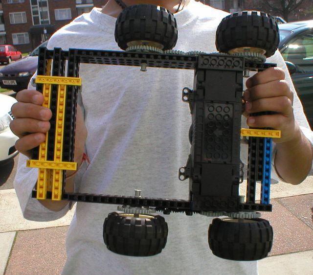

First |
Previous Picture |
Next Picture |
Last | Thumbnails
Dale & Janak: Janak Holds up their technic Lego robot for a close up shot. This robot really is minimal - but those front and rear bumpers are quite solid. Designed for ramming opponents.
